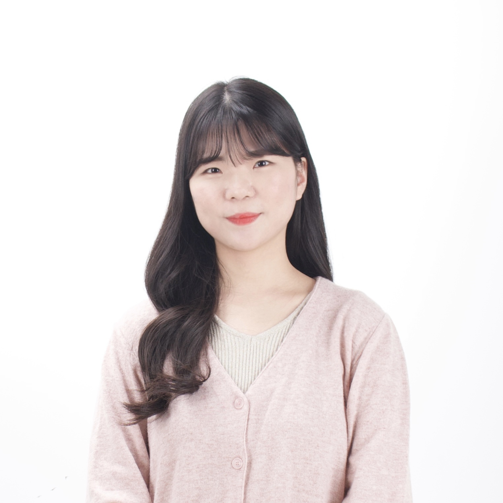
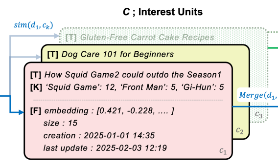
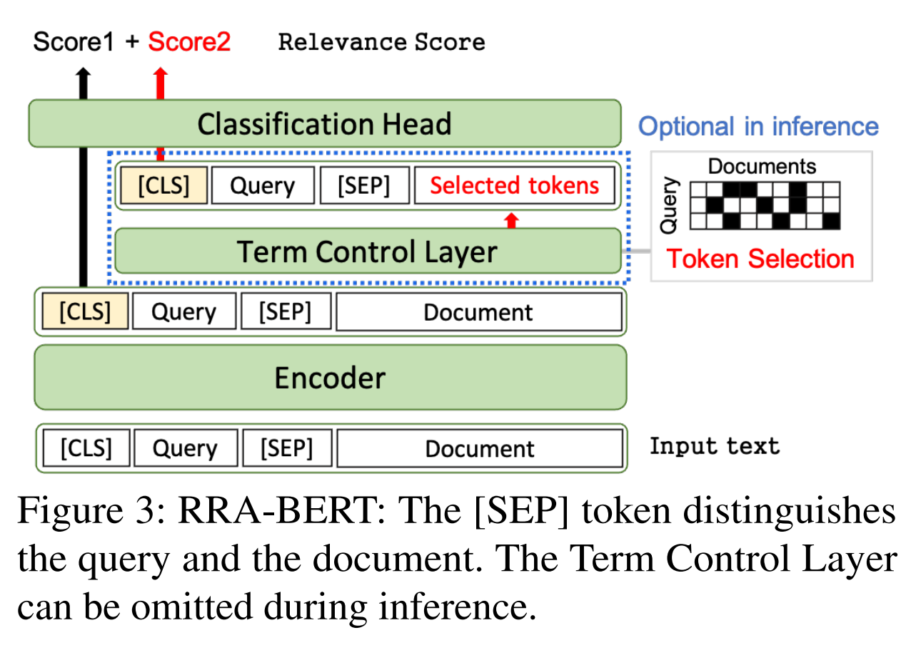
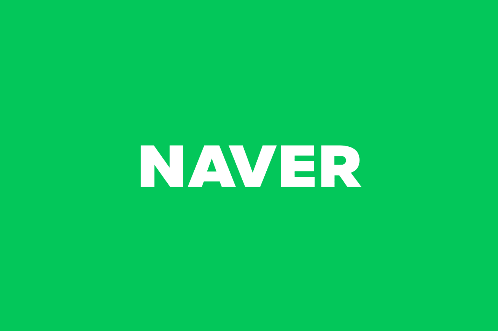

|
Haeyu Jeong
I'm an AI/ML research engineer at NAVER, specializing in personalized recommendation systems.
I received my B.S. in Mathematics and Statistics from Chonnam National University.
My research interests include recommendation and personalization.
Email /
Scholar /
Linkedin /
Github
|

|
|

|
IRA: Adaptive Interest-aware Representation and Alignment for Personalized Multi-interest
Retrieval
Youngjune Lee*, Haeyu Jeong*, Changgeon Lim, Jeong Choi, Hongjun Lim, Hangon Kim,
Jiyoon Kwon, Saehun Kim
SIGIR, 2025 (Oral Presentation)
|
|

|
RRADistill: Distilling LLMs' Passage Ranking Ability for Long-Tail Queries Document Re-Ranking on
a Search Engine
Nayoung Choi*, Youngjune Lee*, Gyu-Hwung Cho, Haeyu Jeong, Jungmin Kong, Saehun Kim,
Keunchan Park, Sarah Cho, Inchang Jeong, Gyohee Nam, Sunghoon Han, Wonil Yang, Jaeho Choi
EMNLP, 2024
|
|

|
NAVER
AI/ML Resarch engineer
2022.01 ~ current
|
|
|
KAKAO
AI/ML Resarch engineer (Intern)
2021.03 ~ 2021.06
|
|
|
Chonnam National University
Mathematic & Statistics
2015 ~ 2019
|
|
{kind=link}